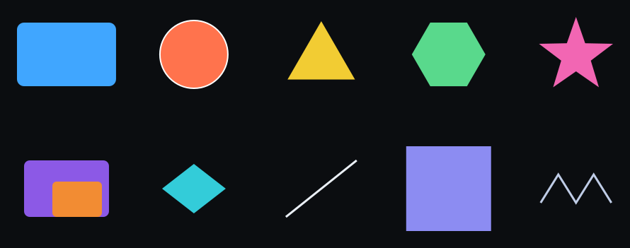

Every tool speaks only to itself
A scene, a typeface, a building, a show, a catalog — each lives in a private file. Moving work means writing a converter, and converters rot. Shared runtimes solve interop by locking the language and the platform.
Rig is the vocabulary those tools could share. Not another editor. Not a library. The document is the artifact.
One grammar. Many domains.
The same composition model — entities with named POD components — wherever two hosts need the same meaning. A host that implements six schemas and ignores the rest is fully Rig. Ship what you support.
The whole catalog · OpenBIM · UFO · Records · Dev machines
Sharing tools should be fun
Take a tool from one app and drop it in another — controls, groups, actions, the working interface. Author the panel in App A. Load the same document in App B. If both speak the same schema ids, the knobs still turn the same fields.
The chrome can change. The tool stays the document. That is the point of a shared vocabulary: borrowing a working tool from someone else's app should feel like a gift, not a rewrite.
The document is the artifact
Content is plain data on entities, keyed by schema id. Live hosts also run a four-hook loop:
Setup → spawn / load entities
Update → simulate (modulators, transport, …)
Draw → present
Exit → tear downOne entity. The picture is that document drawn by a second fulfillment — static SVG, no client JavaScript.

examples/minimal-scene.json drawn by the in-repo renderer.
Same vocabulary, unrelated to any product host.
{
"id": "demo-rect",
"components": {
"rig.spatial.transform": { "position": [20, 65, 0] },
"rig.geometry.rectangle": { "width": 140, "height": 90, "cornerRadius": 10 },
"rig.paint.fill_stroke": { "fillRgba": [0.25, 0.65, 1, 1] }
}
}Excerpt — the full entity is in minimal-scene.json.
Any program that recognises rig.geometry.rectangle can draw
that rectangle, in any language, without knowing what wrote it.
Reference documents · Entity / component · SUDE · Document envelope
What the agreement buys you
A file format saves bytes. A shared vocabulary saves the work around the bytes — every converter never written, every host that can open work it has never seen, every tool borrowed instead of rebuilt.
Work outlives the app
Plain JSON, no runtime to keep alive and no binary to reverse. A document written today opens in a host written next year, in another language, on another machine — because what was agreed is the meaning, not the code.
No converters
Two hosts that speak the same schema ids interoperate the moment they meet. Interop stops being a pairwise translation project and becomes a shared noun both sides already know.
Tools travel
A control panel is a document like any other. Author it in one app, load it in a second, and the knobs still turn the same fields — the interface is data, so it moves like data.
Machines can author it
A model loads one skill and one example, writes the document, and checks it with a validator that answers in JSON Pointers. The next session — human or model — accepts the same data without a briefing.
And it is checked like code: generated schemas, field-level parity, semantic rules, and a stable tier frozen at 1.0 — what that promises.
It runs
A Rig document is not a diagram of a format. The same JSON presents in one host and plays in another, and neither knows the other exists. Looking and running are different jobs, so they are different hosts:
RigViewer
Presents. The still document, drawn — scenes and sketches as written, nothing executed. Zero-setup in the browser: drop a .json and look. Open the viewer.
RigPlayer
Plays. The document over time — transport and clock, animation, simulation, sound. SUDE runs it: Setup, Update, Draw, Exit. Zero-setup in the browser: drop a .rig, press play, or share the whole document inside a link. Open the player.
RigKit
Builds hosts. The coded reference host — desktop and Raspberry Pi, packs over a thin core — for writing the next Viewer, Player, or fulfillment of your own.
Also PicoForge —
a .rig compiled to a running PICO-8 cartridge. This page's
SVG is another fulfillment of the same document.
Built for people and models
The cheapest token is the one the model never generates. Load the skill and one example. Leave the catalog on disk. The model writes the document, not the system.
The real save is the next session. An agent that writes Rig writes data the next agent already accepts. Neither side spends a context window explaining a private format, and neither writes a converter.
When execution gets cheap, agreement is the scarce asset. A generated renderer is disposable. A generated vocabulary is a liability — the next session invents a different one. Rig publishes the concept in a form people and models read the same way.
node tools/rig-validate/cli.js path/to/doc.jsonEvery failure names a JSON Pointer, so an agent can correct itself without a human in the loop.
Start
Clone it, check it, read it. There is nothing to install but the validator. 1.0 freezes the stable schema tier — core rules hold; draft and experimental schemas may still shift by their tier rules.
git clone https://github.com/rigkid/RigWorks
cd RigWorks
npm run setup # installs the validator
npm run check # schemas, parity, links, reference documentsBeing Rig takes the grammar: plain-data components on entities, against schemas you support. Live hosts also honor the four-hook loop. Everything else is opt-in.